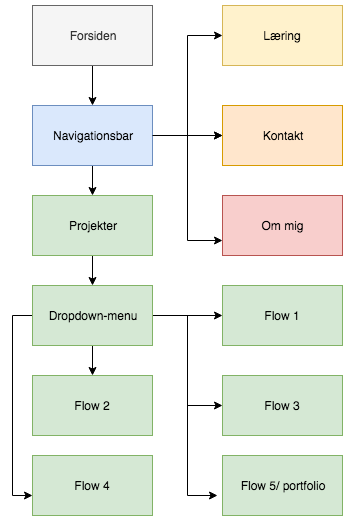
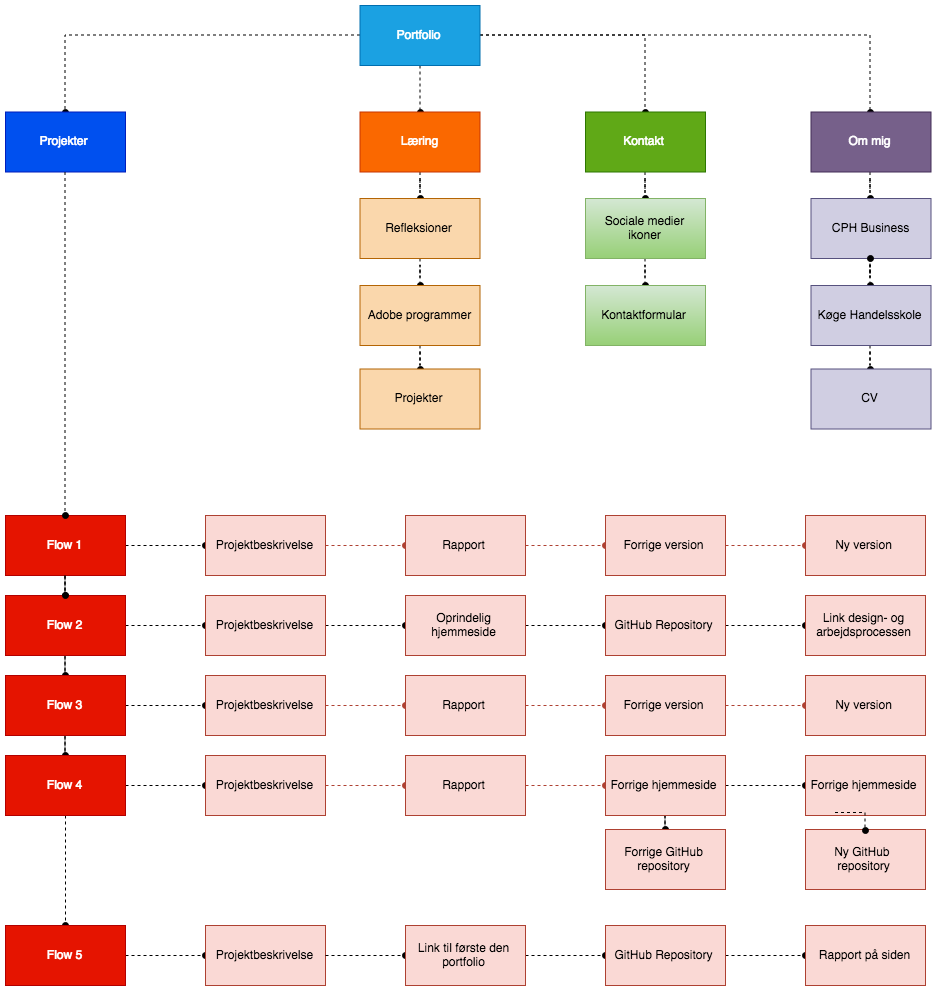
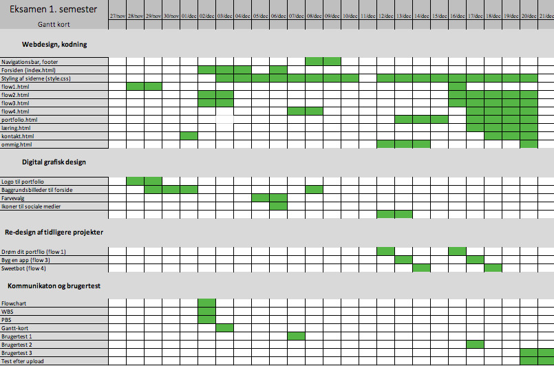

På denne side vil du kunne læse om de konkrete beslutninger jeg har taget i forhold til denne portfolios visuelle udtryk. Dette indebærer typografi, farvevalg, layout, ikoner og logo. Jeg vil her forholde og argumentere de beslutninger jeg har taget undervejs. Til sidst kan man se mit arbejde før skabelsen af denne portfolio. Dette indebærer et flowchart samt OBS, PBS og WBS. Til sidst har jeg indført mit Gantt-kort som samler op på arbejdsprocessen og tidsplanen bag projektet.
Efter flere overvejelser valgte jeg at gå videre med en gennemgående brug af farven sort, hvid og grå. Dette har jeg valgt, da de alle er farveløse og derfor er med til at bringe indholdet frem, hvor der er farver på. De er alle akromatiske og neutrale farver, hvor sort og hvid er den største lys og mørke kontrast der findes. De kan derfor lysne eller formørke alle farver og skaber derfor noget kontrast, da de andre farver vil skille sig mere ud, hvorefter indholdet på siden virker mere interessant. For hvis baggrunden ender med at være mere spændende at se på, vil læseren ikke være lige så fanget af indholdet.
Den hvide farve var meget oplagt eftersom det er lettest at læse sort skrift når det er på en hvid baggrund. Udover det vil jeg gerne have at min portfolio fremstår så simpelt og enkelt som muligt, hvilket den hvide farve bidrager med. Den grå farve er også med til at give et mellemstadie, da det enten er sort med hvid farve i eller omvendt. Samtidigt med det skaber den hvide farve også en ren tavle der kan blive malet på. Det er her den hvide farve skal være reflekterende og få det kreative indhold frem.
Min baggrund har været længe undervejs, men jeg har hele tiden haft i tankerne, at så snart man er på hjemmesiden får man en ide om hvem jeg er. Derfor har jeg valgt at indsætte to billeder af mig selv. Det første billede er i sort/ hvid, hvor jeg er omgivet af HTML og CSS-tekst. Dette er ikke for at gøre læseren forvirret over hvad der står, da jeg har sløret det meste af teksten. Dette er for at give et indblik i, hvad det er jeg kan. Godt nok ved de fleste ikke hvad HTML og CSS er men de fleste vil nok tænke, at det har noget med computere og programmering at gøre.

Det næste billede kommer frem hvis man vælger at holde musen over billedet. Det er her hvor jeg endnu engang vil drage parallel til mit farvevalg. Her går vi fra gråtoner over i en mængde af forskellige farver. Farverne fylder alt det sorte og grå ud ved billedet med watercolor. Måden jeg har gjort dette på er ved at øge den sorte kontrast i Photoshop ved at give mit layer en "mask" og derefter ændret i farveforholdet med "curves" og til sidst "inversed". Herefter har jeg brugt "brush tool" til at give den farver. Jeg har også brugt "brush tool" på begge billeder, hvorpå jeg har en hvid og en sandfarvet baggrund og derefter farver den med mit "brush tool" så jeg synliggøre dele af billedet, hvor jeg har sørget for at det er de samme steder der bliver synliggjort på begge billeder.

I udviklingsprocessen af mit logo har jeg anvendt Illustrator og Photoshop. Mit første logo var meget firkantet og med en skrifttype jeg ikke havde tænkt længe over. Herefter tænkte jeg at logoet ville være meget enkelt og rent i en cirkel. I forhold til farven på cirklen var denne indlysende, da min navigationsbar er sort. Derfor fandt jeg det mest passende med en hvid farve, hvor skriften er sort.
Selve bogstaverne skulle stadig være mine initialer, da mit fornavn og efternavn virkede for langt og forvirrende da jeg har hvad nogle vil opfatte som to fornavne. Derfor blev det AN, som jeg begyndte at tegne i Illustrator efter inspiration fra forskellige skrifttyper. Herefter fik jeg det sat ind i Photoshop, hvor jeg igen benyttede mig af "brush tool" for at give det en ensformig effekt med mit forsidebillede. Her skal det have en "splatter-effect" som går igen i både billede og logo.
De første ikoner jeg designede i Photoshop til denne portfolio var til de sociale medier, LinkedIn, Instagram og Facebook. Jeg valgte netop dem for at brugeren af hjemmesiden har flere måder at kontakte mig på. Først lavede jeg ikonerne i sort og hvid for at give dem det samme udtryk som mit logo. Derfor er bogstaverne i midten sorte, hvor cirklen omkring dem er hvid.
Når man holder musen over mit forsidebillede kommer der farver på, hvor den samme effekt er tiltænkt her. Når man holder musen over ikonerne, vil der komme farve på og de vil fremstå som man kender dem fra applikationerne til det sociale medie. Derfor har de alle fået den farvekode der også repræsentere det enkelte medie og selve bogstaverne bliver hvide, som de også fremstår normalt.
Facebook: #4267B1
LinkedIn: #257AB9
Instagram: #9444C1

Det samme forekommer med mine ikoner til de forskellige Adobe-programmer, som jeg har givet et udtryk der minder om mit forsidebillede med watercolor. Jeg har derfor givet mine ikoner til Adobe-programmerne et lignende udtryk.
Skrifttypen jeg har valgt, der skal gå igen på hele min portfolio er "Roboto". Roboto er designet af Google i 2013 og blev frigivet i 2015. Denne skrifttype skal være med til at gøre min portfolio moderne og tilgængelig. Google startede med at bruge denne skrifttype i deres Android-baserede enheder men efterhånden bliver den brugt i flere af de tjenester som de udbyder.
Tanken bag dette valg falder på, at flere af de tjenester som Google udbyder som f.eks. Gmail og Youtube er meget udbredte. Derfor vil mange brugere også finde skrifttypen velkendt. Jeg ser også en fremtidssikret mulighed i denne typeface, da mange mener det er fremtidens skrifttype og flere sociale platforme vil anvende denne. Udover dette er skrifttypen også designet med det formål, at den skal være letlæselig på skærme. Eftersom min portfolio kun vil ses på skærme så jeg det intet andet end oplagt at vælge denne typeface.
Navigationsbaren har jeg givet en sort farve som beskrevet i farvevalg. Her er menupunkterne hvide, hvor de bliver grå hvis man holder musen over dem. Det menupunkt man befinder sig på vil være konstant grå, så læseren ved hvilken side man er på. I mobiltilstand vil "burgermenuen" komme frem hvor denne også er hvid indtil man holder over den. Hvis man trykker på burger menuen vil menupunkterne folde sig ud vertikalt.
Logoet er placeret ude i venstre side, da folk er vant til at tilbageknappen befinder sig i venstre side og menupunkterne i højre side. Når man trykker på logoet, vil man altid komme tilbage til hjemmeskærmen. Selvom det næsten er alle, der er klar over, at man på mange sider vil komme tilbage til hjemmeskærmen ved at klikke på logoet har jeg alligevel valgt at lave en hjemknap. På den måde hersker der ingen tvivl blandt de forskellige brugere af hjemmesiden.
I menupunktet med ”projekter” har jeg indført en billednavigation for at brugeren nemt kan få et overblik over det enkelte projekt uden at skulle ind og klikke sig ind på hjemmesiden eller XD-prototypen. Her har jeg benyttet mig, af JavaScript for at få et billede til at fremstå ad gangen. Dette er med henblik på at gøre siden så enkel som muligt, da mange billeder kun ville forstyrre. Derfor er det også kun et uddrag af siden man kan navigere frem og tilbage på. Hvis man vil kunne se hele siden kan man vælge at klikke på de links, der er øverst på den enkelte side.
For at kunne navigere mellem billederne har jeg stylet på nogle knapper i CSS. Jeg har med vilje givet dem en større størrelse så man på mobilen ville kunne ramme knapperne. For det nytter ikke at lave siden responsive, hvis det er brugeren ikke kan navigere gennem indholdet.
For at danne det bedste overblik over mine HTML og CSS filer har jeg valgt at inddele dem i mapper. Alle HTML-filerne på nær index ligger i pages, hvor mit stylesheet ligger i style-mappen. JavaScript har jeg med vilje lagt i selve HTML-filerne, da det kun er i mine projekter det er anvendt.
I menupunkterne kan man navigere frem og tilbage mellem alle siderne bortset fra siden med mine projekter. Her vil man kunne navigere frem og tilbage mellem projekterne i en dropdown-menu ude i venstre side. Dette er for at man på mobil nemmere kan navigere frem og tilbage mellem de forskellige projekter i stedet for at skulle åbne burger-menuen.
Her kan man se de overvejelser jeg har gjort mig i forhold til udtrykket og navigationen af denne portfolio. Dette flowchart giver derfor et godt overblik over hvordan man ville navigere rundt i denne portfolio.
Inden projektets igangsættelse har jeg tænkt over formålet med projektet og hvad der forventes dertil (OBS). Herefter har jeg fokuseret på hvem denne portfolio er til og hvad der derfor er relevant. Hvor jeg ønsker at gå hen med projektet og dets formål samt mål er også noget jeg har haft i tankerne (PBS). Til sidst har jeg vurderet projektets omfang og fundet frem til hvad der skal laves af komponenter og undermenuer til de enkelte overmenuer, som er markeret nedenfor med en mørkere farve (WBS).
De tidligere omtalte OBS, WBS og PBS har resulteret i, at jeg har lavet et Gantt-kort, hvilket også er en tidsplan for projektet. Efterhånden som projektet har skredet frem har jeg måtte ændre i tidsplanen, hvilket er årsagen til at noget af processen har taget længere tid en forventet. Der er også visse ting, der er blevet eftertænkt og ændret i resultatet af de tre brugertests som jeg har gennemført. Her fandt jeg ud af, at nogle ting kunne løses på forskellige måder, hvor jeg derefter har taget dette til eftertanke.
Gantt-kortet har været med til at give et godt overblik over projektet og dets omfang. Det har dog også været med til at jeg til tider har skulle ændre nogle ting og derfor udsætte noget af den plan jeg oprindelig havde lagt.
